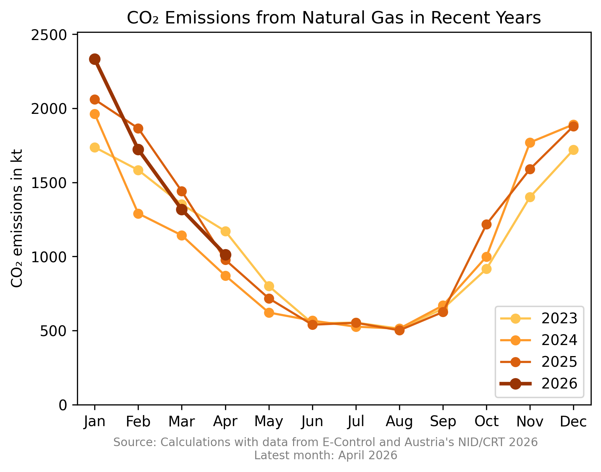
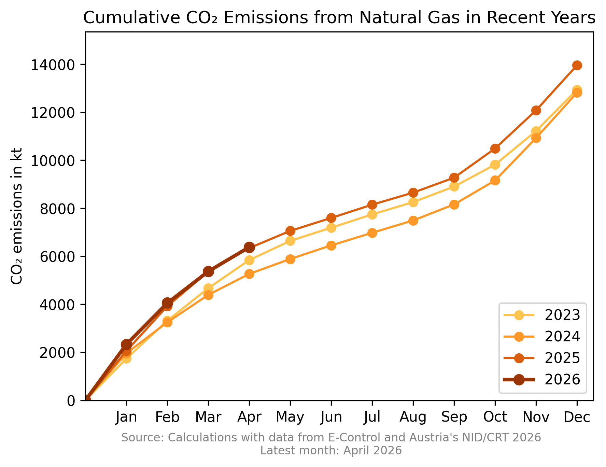
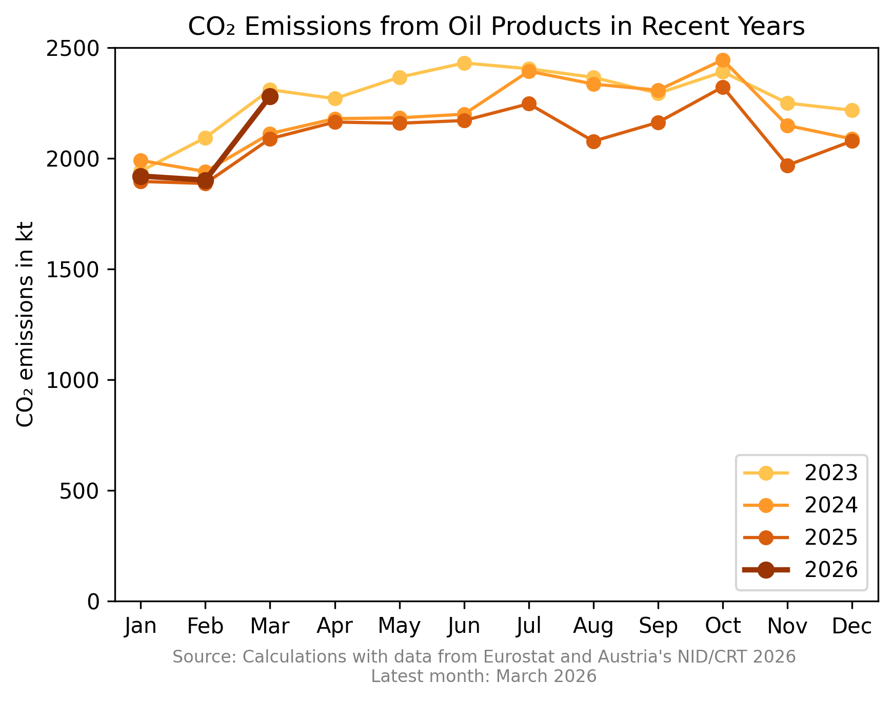
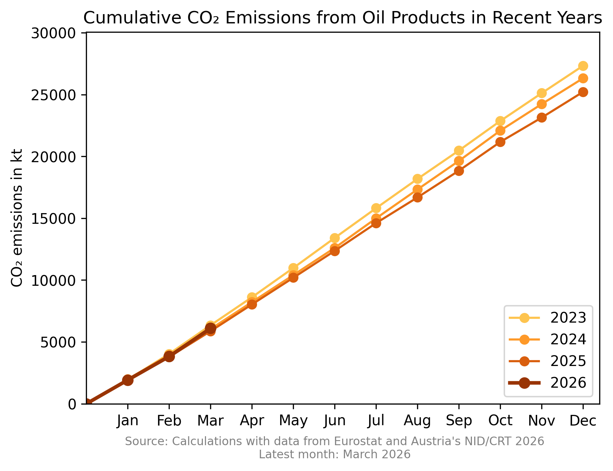
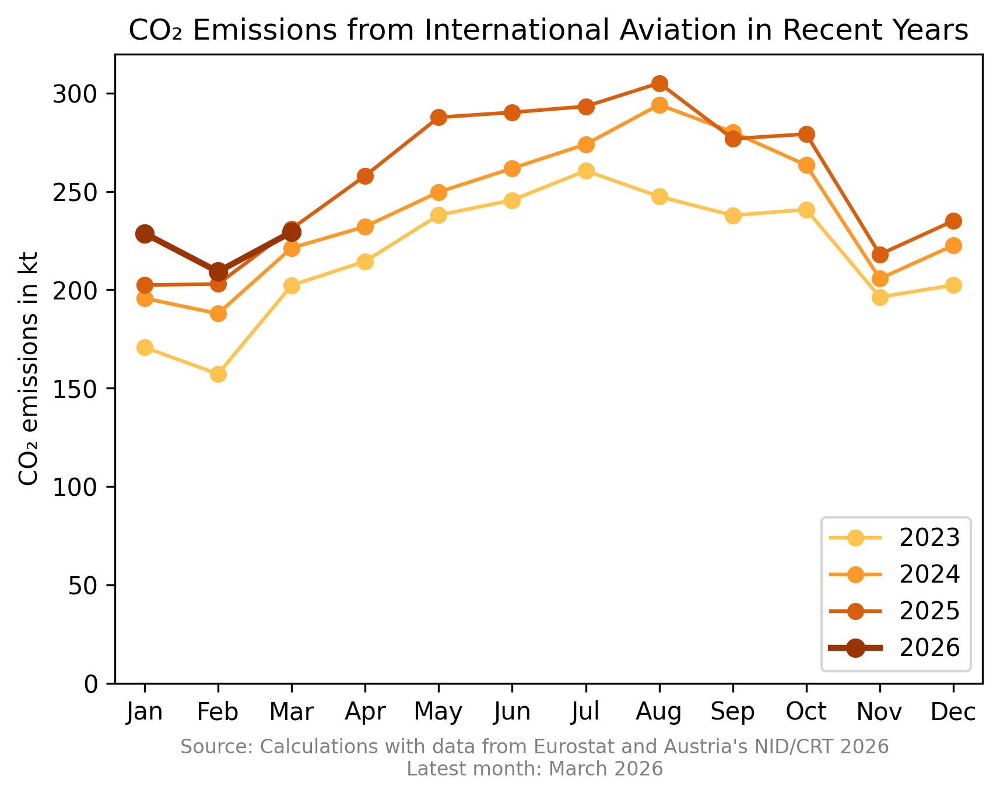
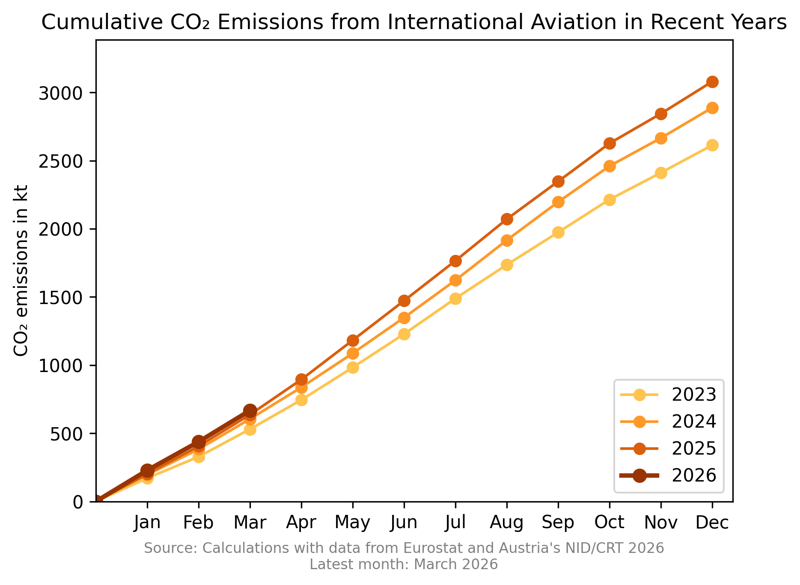
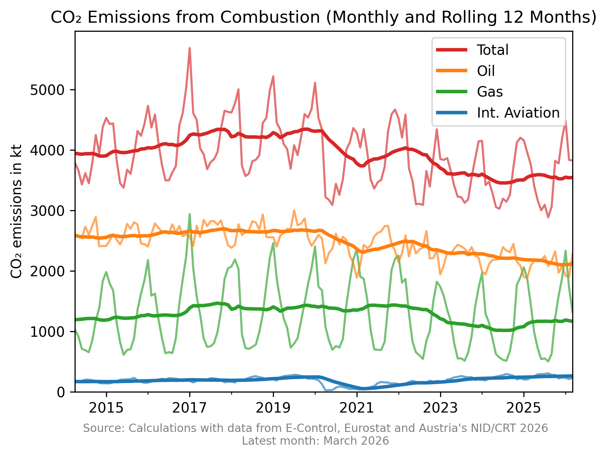
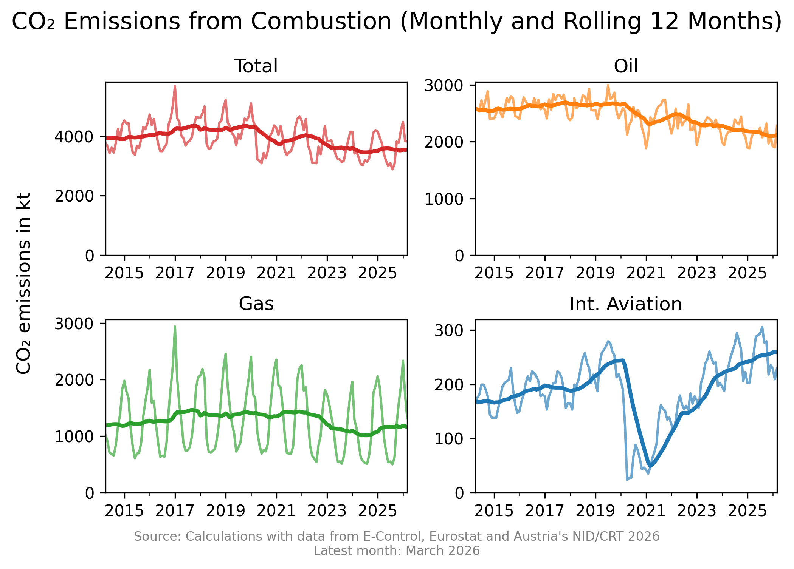
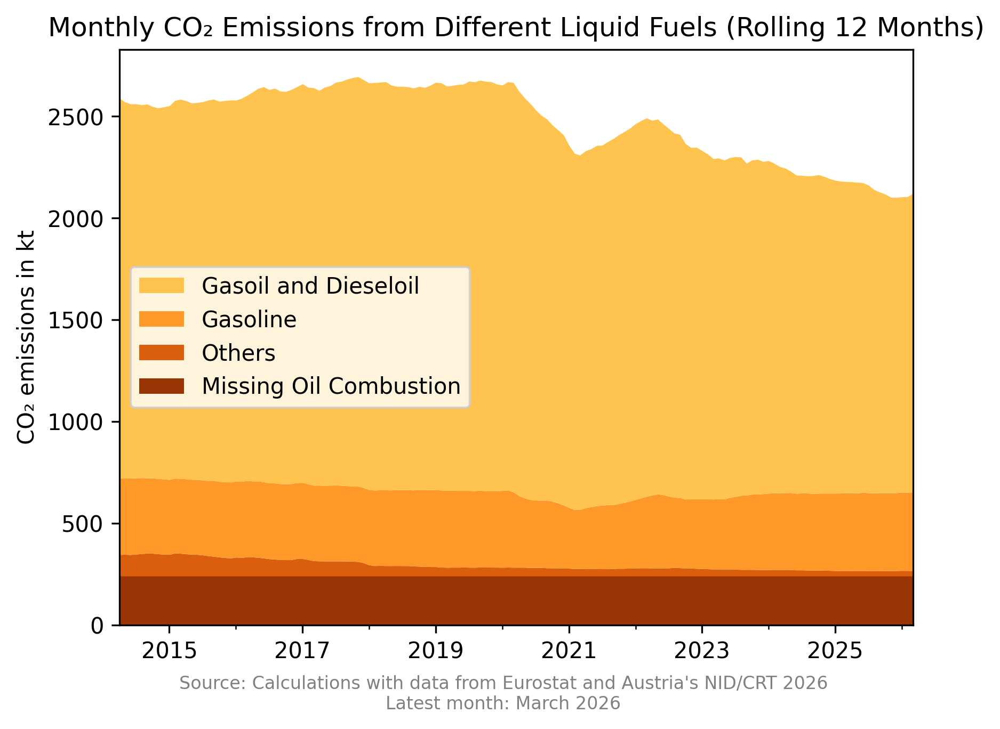
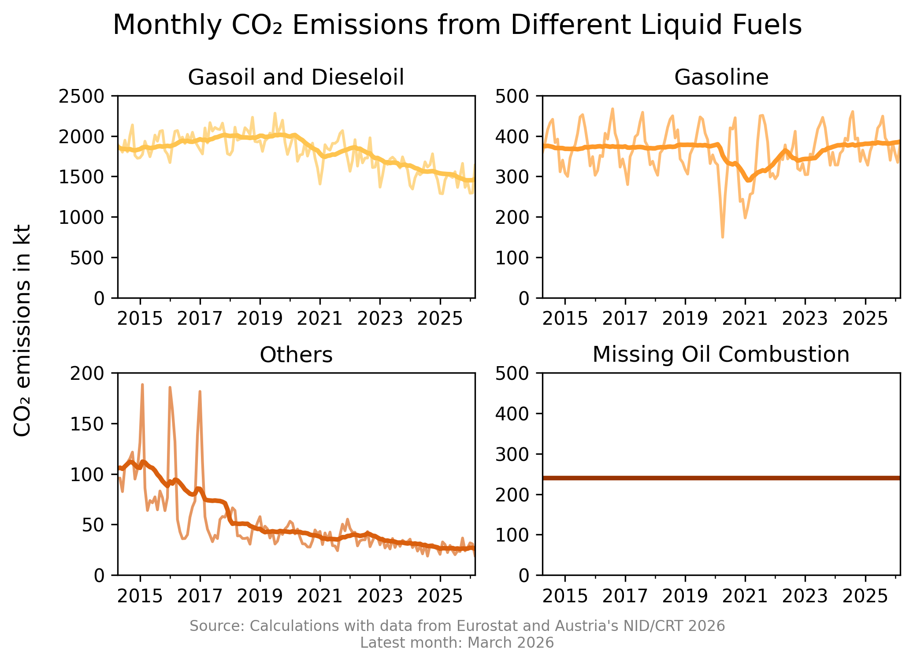

This website presents current CO₂ emissions from the combustion of liquid and gaseous fuel combustion within the energy sector. The calculations presented are rought calculations using monthly fuel combustion activities and is designed to mimic CO₂ emissions from 1A and 1D fuel combustiuon published in Austria's National Inventory Document.
The three different categories for which current calculated CO₂ emissions are shown are: Natural Gas, Oil Products and International Aviation.
Emissions from natural gas are calculated from the inland gas consumption data published by E-Control. Gas used for non-energy purposes is subtracted with a constant calculated from gas connsumption data for ammonia production published in Austria's National Inventory Document 2026
Emissions from oil products is calculated from gross inland deliviers publihsed by Eurostat. The fuel types gasoil and dieseloil (without biofuels), fuel oil, liquified petroleum gas (LPG), gasoline (without biofuels) and kerosene (without biofuels) are used. Most of the kerosene is however accounted towards international aviation. To account for missing consumption activities in the raw data, a constant calculated by the difference to the CO₂ emissions published in Austria's Common Reporting Tables 2026 (CRT) is added.
CO₂ emissions from international aviation is calculated from 98.83% of kerosene consumption published in the before mentioned data from Eurostat. This value is the mean distribution between domestic and international aviation from the CRT in the years 2022 to 2024.
In the following graphs the monthly CO₂ emissions from the current year and the three years before can be seen. The emissions are presented as monthly emissions on the left and as cummulative emissions on the right.






In the following graphs the long time trends of the calculated CO₂ emissions are shown. To better visualize the trends, the emissions are sometimes shown as a rolling 12 months mean. The last 12 years are shown in all figures. This means that one line consists of 144 datapoints.
The category "Total" consists of the sum over all calculated CO₂ emissions from Oil Products, Natural Gas and International Aviation. It is important to mention, that International Aviation is normally not accounted towards the emissions of the given country.


The category "Others" consists of the fuel types fuel oil, LPG and kerosene (domestic aviation).

